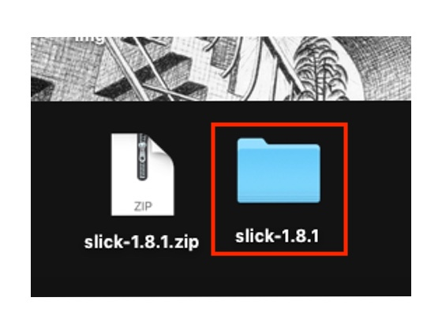
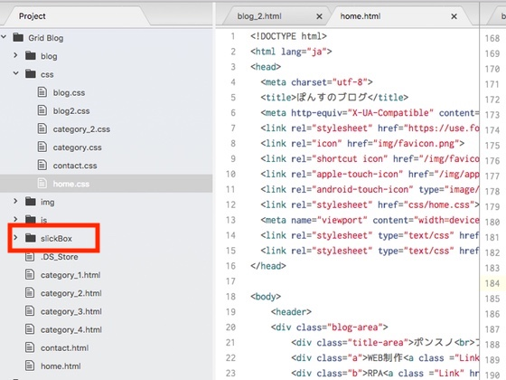

超初心者でもできた！ページスライダーの作り方 jQueryのプラグイン"slick"を使ってページスライダーを作る方法
最近色々なオシャレサイトで見かける軽やかなページスライダー。 jQueryのプラグイン"slick"を使えば簡単に実装可能です！ この記事では、実際にどんなコードを書けばいいかの具体例を示しながら、"slick"の使い方を解説していきます。 「簡単なHTMLとCSSの知識しかない。」「jQueryなんてやった事ない。」という方でもわかる説明を心がけているので、WEB制作初心者の方も挑戦してみましょう。
デモページはこちら（コード確認できます）

まずはhttp://kenwheeler.github.io/slick/ に入り、
右上の"Get it now"をクリックします。
"Download Now"をクリック。
すると、デスクトップに写真左のようなzipファイルが現れるので、これをダブルクリックし、 右手に出てきたファイルをサーバーに配置します。 配置する場所は、Atomのプロジェクトファイルにだったり、 このブログの場合はGithubレポジトリにだったり、使う環境次第です。 ファイルの名前はこのままでもいいですが、"slick-1.8 1 2"って名前は管理しづらくて嫌だったので、"slick-1.8 1 2"→"slickBox"に名前を変更します。
私の場合は、まずはAtomで作ってからGithubレポジトリに移すスタイルで
やってるので、Atomのプロジェクトファイルにとりあえず配置しました！
これで準備は完了です。
後はコードを書くのみです。
1、HTMLのスライダーを追加したい場所に以下のようなコードを書きます。
sampleコード
<div class="your-class">
<div>your content</div>
<div>your content</div>
<div>your content</div>
</div>
実際に書いたコード
<div class="slickbox">
<div><img src="img/dack.jpg"></div>
<div><img src="img/dack.jpg"></div>
<div><img src="img/dack.jpg"></div>
<div><img src="img/dack.jpg"></div>
<div><img src="img/dack.jpg"></div>
<div><img src="img/dack.jpg"></div>
</div>
2、<head>の中に以下のように書き込みます。
sampleコード
<link rel="stylesheet" type="text/css" href="slick/slick.css"/>
<link rel="stylesheet" type="text/css" href="slick/slick-theme.css"/>
実際に書いたコード
（ちゃんと階層を合わせてないと動かないのでご注意ください。）
<link rel="stylesheet" type="text/css" href="slickBox/slick/slick.css"/>
<link rel="stylesheet" type="text/css" href="slickBox/slick/slick-theme.css"/>
3、</body>の閉じタグの上にjQueryの読み込みを配置。その下にslick.jsも追加します。
sampleコード
<script type="text/javascript" src="//code.jquery.com/jquery-1.11.0.min.js"></script>
<script type="text/javascript" src="//code.jquery.com/jquery-migrate-1.2.1.min.js"></script>
<script type="text/javascript" src="slick/slick.min.js"></script>
実際に書いたコード
<script src="https://ajax.googleapis.com/ajax/libs/jquery/3.3.1/jquery.min.js"></script>
<script type="text/javascript" src="slickBox/slick/slick.min.js"></script>
この手順では、まずjQueryを読み込んでからslick.jsを加えているのですが、 jQueryをまるで知らないと少し意味がわからないかもしれません。 とりあえず、jQueryの読み込み処理は上の[実際に書いたコード]の1行目をそのまま貼り付けるだけで大丈夫です。 2行目のslick.jsを加える処理も階層だけ注意すればそのまま貼り付けて使えます。 jQueryの読み込み処理についての解説は別記事に今後まとめるので、ひとまず今は深く考えずにコピペしてしまいましょう。
4、どんなスライダーを作るのか？のカスタマイズ設定をしていきます。このコードは、3で書いたコードの真下、bodyの閉じタグの上に配置します。
sampleコード
<script type="text/javascript">
$(document).ready(function(){
$('.your-class').slick({
setting-name: setting-value
});
});
</script>
実際に書いたコード
sampleコードの上から4行目「setting-name: setting-value」という項目には、
具体的に「スライダーにこの様に動いてもらいたい！」と考える処理を入れていきます。
[dots: true]→スライドするページの数、スライダーの下に黒丸がつく。
[slidesToShow:3]→一度に表示されている画像の数。
[slidesToScroll:3]→矢印ボタンを押すたびに、切り替わる画像の数。この場合、3つと設定されているので3個づつ画像が切り替わる。
<script type="text/javascript">
$(document).ready(function(){
$('.slickbox').slick({
dots: true,
slidesToScroll:3,
slidesToShow:3
});
});
</script>
5、slick-theme.cssを修正する
1〜4の手順でHTMLへの書き込みは終了。次は、CSSを修正します。デフォルトのCSSコードのままだと、横にスライドさせる為の矢印が非表示です。（そんなバカな！！）というわけで、最初にダウンロードしたファイルの中に入っている slick-theme.cssを少し修正します。このCSSを修正することで、矢印の大きさ・色・位置などを調節できます。ボタンを画像の外側に出す事も可能です。 Chromeでは矢印が機能しているのに、他のブラウザでは矢印が欠けてしまうなどの不具合が出た時も、ここの調節で治りました。
デフォルトのCSSコード
.slick-prev{
left: -25px;
}
.slick-next{
left: -25px;
}
.slick-prev:before,
.slick-next:before{
font-size: 20px;
}
修正後
.slick-prev,
.slick-next{
width: 30px;
height: 30px;
}
.slick-prev:before,
.slick-next:before{
font-size: 30px;
}
.slick-prev{
left: 10px;
z-index: 2;
}
.slick-next{
right: 10px;
z-index: 1;
}
これで上にデモを用意したような、画像を切り替えるスライダーが完成です。 更に画像にリンクをのせたり、コメントを書き込んだりして好きなようにアレンジしましょう。 スライダーのスタイルをカスタマイズしたい場合は、http://kenwheeler.github.io/slick/のデモページで確認して、 手順4の"setting-name"を書き換えて調節すれば色々なパターンのスライダーが作れることでしょう。